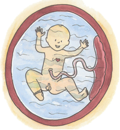
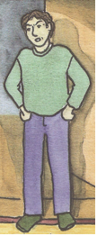
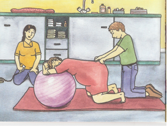
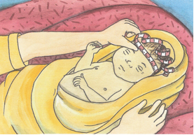
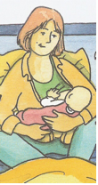
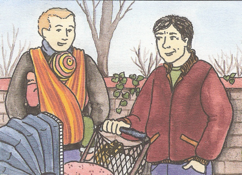
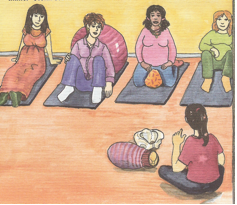

CONTENU DES COURS DE PRÉPARATION À LA NAISSANCE
1) LA GROSSESSE
- Durée, évolution et maux de grossesse.
- Aides aux petits malaises de la grossesse.

( source: Was macht eigentlich eine Hebamme?
Von Tara R. Franke)
- La prise de poids et l’alimentation. - Les précautions à prendre pendant la grossesse. - Les craintes de la future mère. - Les états sentimentaux de la future mère. - Devenir père: les sentiments d’incertitude et les craintes. |
 ( source:Was macht eigentlich eine Hebamme? Von Tara R. Franke) |
2) L’ACCOUCHEMENT.
- Les contractions et la perte des eaux.
- Les trois phases de l’accouchement.
- La phase de transition et les poussées.
- La naissance du bébé et l’expulsion du placenta. - Le rôle du père pendant l’accouchement. - La prise en charge de la douleur par : suppositoires, anesthésie locale et anesthésie péridurale. - L’accouchement par ventouse ou forceps. - La césarienne. - La naissance sans violence. |
( source: Was macht eigentlich eine Hebamme? Von Tara R.Franke) |
3) LE NOUVEAU-NÉ.
- L’aspect du nouveau-né.
- Les premiers examens à la naissance.

( source: Was macht eigentlich eine Hebamme?
Tara R. Franke)
- La phase d’adaptation.
- La perte de poids.
- Les premiers examens du pédiatre.
- Les pleurs du bébé et les remèdes.
- La jaunisse→ l’ictère physiologique du nouveau-né.
4) L’ALLAITEMENT.
- Le lait maternel est le meilleur lait pour votre enfant.
- La première mise au sein après l’accouchement.
|  ( source: Was macht eigentlich eine Hebamme? von Tara R. Franke) |
- La montée laiteuse. - La fréquence des tétées et la bonne mise au sein. -Les différentes positions pour allaiter. - La prévention des crevasses, de l’engorgement et de mastite ? - L’alimentation de la femme allaitante. - Le rôle du père pendant la phase de l’allaitement. |
5) DEVENIR PARENTS
- L’attachement entre parents et enfant.
- Les sentiments maternels.
- Devenir père.

( source: Was macht eigentlich eine Hebamme?
Von Tara R. Franke)
- Devenir parents et rester un couple après la naissance du bébé.
- Les premiers rapports et la contraception.
- Les suites de couches et la rééducation périnéale.
- Les formalités après un accouchement.
6) INSTRUCTIONS PRATIQUES
- La préparation de l’accouchement sans anti- douleurs.
- Les aides naturelles pour accoucher.
- Les positions pendant les contractions et la phase d’expulsion.
- Les techniques de respiration et de poussées.
- L’aide du partenaire.
- La préparation mentale à l’accouchement.

( source: Was macht eigentlich eine Hebamme?
Von Tara R.Franke)
- Les soins du bébé.
- Les aides dans la manipulation du nouveau-né.